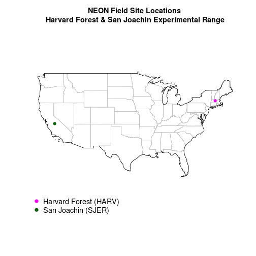

Answer a Spatio-temporal Research Question with Data - Where to Start?
Overview
Teaching: 30 min
Exercises: 30 minQuestions
TBD
Objectives
TBD
This tutorial provides an overview of finding spatial data to support your research question. It covers some of the key data sources, providers and places that you can look to find data for your study are / research question.
Skill Level: This tutorial provides conceptual background for the NEON / Data Carpentry spatio-temporal tutorial series. The concepts outlined in this tutorial, relate to many other programming languages and data types!
Goals / Objectives
After completing this activity, you will:
- Understand the general process of identifying types of data we might need to answer a spatio-temporal research question.
- Understand the overall science concept and associated data of the NEON / DC Work with Spatio-temporal Data in R series.
- Understand that one can work with data from different sites to compare areas.
Answer Scientific Questions Using Data
We often begin a research project with one or more questions that we would like to answer. Once we have a question, we identify the:
- Type of data needed to address the question.
- The spatial coverage required - location that the data should cover & spatial extent.
- The required temporal coverage - time period that the data should span to properly address the question.
Once we have identified these things, we can determine what methods are needed to collect data needed to answer our question.
Work With External Data
When our question requires data that are small in temporal and/or spatial scale, we can often collect the data needed to answer the question ourselves. When we ask questions that cover larger spatial (e.g. regions to continents) and temporal scales, we often need to use data collected by other labs, organizations, and agencies. We refer to these data as external data - data that we have not collected ourselves.
Metadata - Data That Describe the Data
When working with external data, we need to understand metadata - the documentation associated with a dataset that helps us understand collection and processing methods, format and other key information including:
- What methods were used to collect and process the data in order to trust that it will be sufficient to answer our question.
- In what format & how the data are stored - what methods were used to indicate missing data values and bad data values in order to process the data effectively and get accurate analysis results.
- If the data are explicedly spatial (e.g. GIS-type data), then we need to understand key spatial metadata to properly process and visualize the data.
Research Question - Explore (Regional) Drivers and Patterns of Plant Phenology
Our science topic for all of the tutorials in this series is plant phenology. Our goal is to:
- Better understand (to quantify) both the timing of when plants turn green (green-up) and die back / turn brown (brown-down).
- To quantify two key drivers of this timing - precipitation and temperature and visualize how / if trends observed in precipitation and temperature relate to trends observed in greening and browning of vegetation.
- Additionally, we’d like to understand how / if “1” and “2” above vary at different sites.
Our study area includes two National Ecological Observatory Network (NEON) field sites in the United States:
- Site One: Harvard Forest located in Massachusetts in the northeastern United States.
- Site Two: the San Joaquin Experimental Range located in the central region of the US state of California.
Both sites are mapped below:

These two sites are about 4,900km (3,000 miles) apart! Do we expect to see differences in the timing of greening and browning of plants (phenophase timing) between the two sites? If there are differences, what is causing them? Do the two sites have the same drivers (causes) of phenologic change.
Science Goals - Spatio-temporal Data in R Series
In the Work with Spatio-temporal Data in R series, our goal is to create plots of temperature, precipitation and the patterns of phenology - specifically the greening and browning of plants - for one year (2011), over two NEON field sites. To achieve this goal we need data that:
- Cover the same time periods - temporal data (year=2011).
- Are for the same spatial locations (our two field sites).
- Are collected using similar methods so they are comparable at our two field sites that are located 3,000+ miles apart!

Challenge: Components of a Large Research Question
Consider the following questions:
- What are some potential sources of data that might be useful to address our phenology question?
- How would you go about finding these data?
If you have a colleague nearby, discuss it with them!
Project Components
One way to tackle our research project, is to break it down into smaller pieces. We can first identify the types of data that we need. We’d like to do the following:
- Map / plot phenophase timing at both sites: We will need data that quantify degree of greenness at both sites. Where can we get that and how do we process it to plot greenness at both sites?
- Understand our field sites: To understand our sites we will need data that
“map” vegetation cover and show road locations and boundaries. We also might want to create a map of our study
sites for a future publication.
- How large (spatial extent) are the sites?
- How dense is the vegetation?
- Where are the field sites located?
- Are the sites accessible by roads or difficult to get to?
- Plots of temperature and precipitation: Both are drivers of phenophase timing. We want to plot each at both sites for the same temporal duration as our greenness data.
A Spatio-Temporal Approach
Find Phenology Data
Where do we start to find data that quantifies the timing of plant greening and browning?
We could go outside and monitor individual plants and write down in field notebooks when they turn green and brown. However, in this case, we can’t monitor enough plants over a large enough area by ourselves to quantify greening and browning of entire forests or grasslands at multiple sites. To answer our specific question at a regional scale, we need data that can measure these events over larger areas.
Phenology at Different Scales
One way we can measure phenology over larger areas is to use Remote Sensing imagery
- data collected using high fidelity cameras mounted on satelites and airplanes. Satellites continuously orbit the earth capturing images of the earth’s surface.
The Landsat sensor, captures images of the same area every 16 days which makes it a very powerful spatio-temporal data source. Because the data are collected from space, they cover a larger area. The data are standardized, collected using the same “camera”, so the data can be easily compared across sites and through time.
Introduction to Spectral Remote Sensing
This video explains how remote sensing cameras (spectral sensors) work.
Data Note: Phenocam data are another source of phenology data at the site scale. Phenocams are often mounted on towers and capture repeat photography of vegetation each day. Learn more about the phenocam Citizen Science collaboration- Season Spotter.
NDVI Measures Plant Greenness
We can use remote sensing imagery to derive the Normalized Difference Vegetation Index (NDVI) - a quantitative index that measures how “green” or healthy vegetation is on the ground. NDVI greenness values ranging from 0-1 where 0 represents minimal or no greenness and 1 represents maximum greenness. NDVI is an ideal data product used to estimate the timing of plant “green-up” and “brown-down” over large areas.

We can visualize NDVI remote sensing data and see the change in color (representing the change in the index) as the growing season progresses across the year. In this figure, each plot presents a snapshot of the NDVI values across an area of 120m x 150m.

Data Note: NDVI can be calculated using any image that contains a near-infrared band. Some phenocams capture near-infrared light.
Find Remote Sensing Data
There are many sources that allow us to request and freely download remote sensing imagery and products like NDVI. In the United States, one popular data provider is the United States Geological Survey.
Other, non-USGS sources of remote sensing data can be found in the Data Sources list at the end of this tutorial.
Challenge: Explore Landsat Look Website
Visit the Landsat Look Viewer website. Search for any location of interest. One option could be a NEON Field site: Harvard Forest, Massachusetts, United States.
Then answer the following questions:
- Are data Landsat sensors are available for the area? If so, what Landsat sensors do the data come from?
- Is there cloud cover in any of the images?
- What time period are the data available for?
Discuss with a colleague if you are working on this in a workshop!
Work With Remote Sensing Imagery - Raster Data Format
Remote sensing images are in raster format. They are composed of pixels -
just like the pixels in the images we take with our camera phones. Because we are studying
phenophase timing, we need raster data collected
repeatedly through time to identify when groups of plants green-up and brown down.
We can use the rasterVis package in R efficiently plot raster time
series.
We will learn more about the raster format in Spatial Data Formats – Intro to Shapefiles (Vector Data) and GeoTiffs (Raster Data)
We will learn how to work with raster data in the NEON Data Skills Introduction to Working With Raster Data in R tutorial series, and, about raster time series data, in the Work With Raster Time Series Data in R tutorial series.
Find Temperature and Precipitation Data
As a part of our research project, we also would like to plot three drivers of green-up and brown-down phenophase stages - temperature (both air & soil temperature), photosynthetically active radiation, and precipitation.
Precipitation, temperature and other micrometeorological measurements are recorded at weather stations across the globe. Many research and long term monitoring stations have towers with sensors mounted on them that collect high frequency (many measurements a second or minute) measurements of variables including temperature, precipitation, light intensity, wind speed and more.
Some sources of climate data:
- National Ecological Observatory Network (NEON): data from a network of flux towers, that measure temperature, precipitation, wind speed, light intensity and more. Field sites are located across the United States. Data can be downloaded from the NEON data portal .
- FluxNet: a network of towers located around the world.
- NOAA National Center for Environmental Information (formerly National Climatic Data Center): from a network of weather stations maintained by NOAA.
- Long Term Ecological Research sites (LTER): Many LTER sites have micrometerology towers that collect climatic data.

Climate Data At Our Field Sites
If we want climate data for our field sites, there are several places that we can start. In our case, Harvard Forest is a LTER site , so we can hope for a micrometerology tower that contains temperature and precipitation sensors. Visiting the Harvard Forest research stations home page, we learn that it has a meteorological station / flux tower that has been collecting data since 2001. Better yet, the data are freely available for download from the Harvard Forest data archives.
Data Note: Also take note that there are some other data resources on this page including “GIS” data. Many research stations (not all) have these types of data available.
Micro-meteorological Data from the Fisher Tower
The Harvard Forest Fisher Meteorological Station has been operational since 2001. It is located in an open field and records air temperature, relative humidity, precipitation, incoming and net radiation, barometric pressure, wind speed and direction, and soil temperature. Data is available at 15-minute and daily intervals.


Work With Time Series Data in R
The climate data are available for download in a Comma
Separated Value (.csv) format. To work with these data in R, we will need
to understand how to work with date and time formats.
The Introduction to Working With Time Series Data in Text Formats in R tutorials
cover how to import time series data in .csv format into R and how to work with, subset and plot date & date/time formats.
Challenge: Explore External Data from Harvard Forest
Revisiting the Harvard Forest research station data archives:
- What other data are available for Harvard Forest?
- Is there inforamtion that you’d consider metadata?
- Which file formats do you recognize? Which are new to you?
Data to Characterize our Study Site
It is often useful to create maps that characterize our field sites. Maps are integral to planning site visits and plot locations prior to visiting. Maps are useful tools to get to know a site’s:
- Layout including roads, and other infrastructure.
- Topography (elevation)
- Vegetation height and cover
They are also essential for understanding sites that we may study using external data but never visit because they are far away or access is restricted. Maps are also useful for describing our field sites in publications.
Map Site Infrastructure: Buildings, Roads, Streams
The most basic map that we might draw of our site is one showing the
infrastructure on a site, including roads, trails, streams, buildings and other
landmarks. These points (e.g., field house), linear (e.g., trails & streams),
and boundary type data are often found in shapefile format ( .shp).
This is a vector format that is read by most GIS programs.
Work With Vector Data
We will learn more about the vector format in Spatial Data Formats – Intro to Shapefiles (Vector Data) and GeoTiffs (Raster Data) tutorial.
Further, we explore working with vector data in more depth in the Introduction to Working With Vector Data in R tutorial series.
Map Topography & Vegetation Cover - LiDAR
Light Detection and Ranging Data (LiDAR) data provide high resolution, accurate topography (elevation) and three-dimensional vegetation cover and structure (density and height) information. LiDAR can also be used to find the location of roads and streams (a way to initially create the shapefiles mentioned above).
- Learn more about LiDAR in the NEON Data Skills The Basics of LiDAR - Light Detection and Ranging - Remote Sensing tutorial
- Learn more about LiDAR canopy height and digital elevation models in the NEON Data Skills What is a CHM, DSM and DTM? About Gridded, Raster LiDAR Data tutorial
Sources of LiDAR Data
As LiDAR is most often captured from an airplane, the coverage of publically available LiDAR-derived data products is much less than that of satellite-based remote sensing. Research stations may have Digital Elevation Models (DEM) and Canopy Height Models (CHM), that map elevation and vegetation height respectively, or other LiDAR-derived data available for researchers.
- NEON airborne observation platform data portal: more information in the next section.
- Open Topography: a great source of free LiDAR data in the US.
- USGS LiDAR data
Data Note: In the United States, state-wide data are often also available locally. State GIS offices are often a good source of information and sometimes have online repositories to access the data.
NEON Airborne Observation Platform (AOP)
The NEON airborne observation platform (AOP) collects annual remote sensing data over NEON field sites using sensors mounted on an airplane. The AOP consists of a hyperspectral imaging spectrometer, a full waveform and discrete return LiDAR, and a high-resolution Red Blue Green (RGB) camera. Data from the AOP build a robust time series of landscape-scale changes in numerous physical, biological and biochemical metrics, such as vegetation cover and density, canopy chemistry, and topography, including elevation, slope and aspect.
Data Used In The Work with Spatio-temporal Data in R Series
In the Work with Spatio-temporal Data in R series, we will use the following data to explore the drivers of patterns of vegetation phenology (greening and browning ) across multiple sites.
- Landsat-derived NDVI data
- Light Detection and Ranging Data (LiDAR) data
- Site layout vector data
- Micro-meteorological data in tabular (.csv) format
This Intro to Working With Spatio-Temporal Data and Data Management series will provide you with the conceptual information to succeed in the following data skill intensive series.
Resources for Locating Spatial and Ecological Data
General / Broad Topics
- DataOne: a wide variety of data shared by different users.
- US federal data portal (data.gov): This is the clearing-house for all types of US federal data.
- US federal spatial data portal: provide geospatial data, services, and applications for use by the public and by government agencies and partners.
- New York state government data: Many states have their own data portal. Simply search for the state name and “data portal” to find most of the repositories.
- Ecological Data Wiki : This wiki is designed to find & compile ecological datasets.
Additional Phenology Data Sources
- National Ecological Observatory Network (NEON) : provide data from a continental-scale observation system with the purpose of examining ecological change over time. The data portal provides a wide diversity of standardized ecological data, including phenology, for all sites in the observatory network.
- USA National Phenology Network : a collaborative effort to collect phenology data
- Phenocam: provide automated, near-surface remote sensing of canopy phenology across the northeastern United States and adjacent areas of Canada.
Additional Remote Sensing Data Sources
- USGS/EROS Center: remote sensing phenology data
- NASA Landsat: Landsat imagery data for the globe
Data Note: Do you know of other good sources of ecological data, especially for other countries/regions? Please share them in the comments at the bottom of this page.
Key Points
TBD